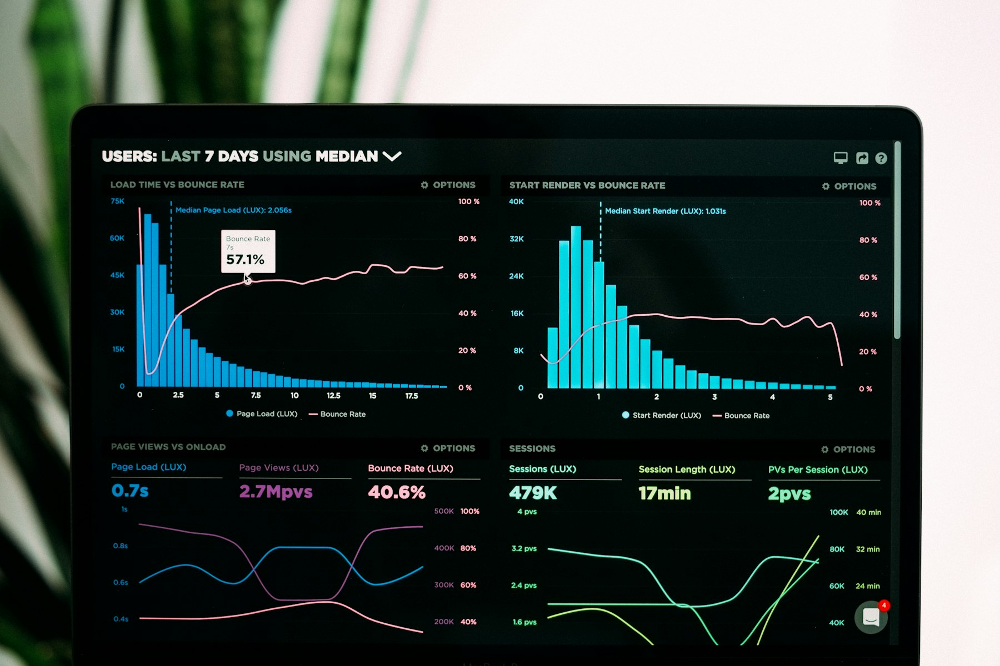

TL;DR
AI can effectively automate repetitive work tasks to boost productivity. Start by identifying tasks, choosing the right tools, implementing, monitoring, and evaluating benefits for long-term success.
Identifying Repetitive Tasks
The first step in automating tasks is identifying the repetitive tasks that consume significant time. Start by listing daily activities that follow a similar pattern, such as data entry, email responses, or report generation. Once you have this list, prioritize these tasks based on time consumption and effectiveness. Use time-tracking tools or journals to observe which tasks drain your time and focus. This clarity will aid in selecting which tasks to automate. For example, if you spend hours each week on data management, it’s a candidate for automation. Look for tasks that could be streamlined or eliminated completely using AI tools.
Choosing the Right AI Tools
After identifying repetitive tasks, the next step is selecting appropriate AI tools for automation. Research tools that cater to your business needs, focusing on usability and integration capabilities. Popular choices include Robotic Process Automation (RPA) tools like UiPath or Automation Anywhere for data handling. For customer service tasks, consider chatbots like Drift or Intercom to handle inquiries automatically. For basic tasks, even tools like Microsoft Excel have built-in AI features that can simplify data manipulation. Assess these tools based on features, pricing, and user reviews to find the best fit for your requirements.
Implementing AI in Your Workflow
Implementation is critical. Begin with a small pilot project to test the AI tool you’ve selected. This could be automating one specific task initially to evaluate effectiveness. Ensure that all team members are on board and comfortable with the new technology. Provide training sessions to help everyone understand how to use the new tools effectively. Continuous feedback is key; adjust the process based on user experiences. Once the pilot is successful, gradually expand the use of AI automation to other tasks. Document processes and results to monitor improvements clearly.

Monitoring and Optimizing AI Solutions
Monitoring the performance of your AI tools is essential for maximizing their benefits. Set measurable goals to track the effectiveness of automated tasks. This could be time saved, errors reduced, or customer satisfaction rates. Regularly review these metrics and adjust your AI setup as needed for optimal performance. Engage with your team for feedback on the tools and their performance. Have regular check-ins to discuss any issues or improvements. Optimization can also include updating software regularly and exploring new features as they become available. Stay informed on technological advancements that could enhance your AI tools.
Evaluating Long-Term Benefits
Finally, evaluate the long-term benefits of using AI for automation. Look at the broader impact on your organization, such as increased productivity, reduced costs, and improved employee satisfaction. Collect data over a period to see trends in performance. Does automating tasks allow employees to focus on strategic areas? Are there measurable improvements in customer relations? Sharing these results with the team can help reinforce the value of the investment in AI tools. Continually assess whether the current tools still meet business needs and be ready to adapt or change as necessary to ensure sustained benefits.
FAQ
What tasks can I automate with AI?
Repetitive tasks like data entry, scheduling, email responses, and customer support can easily be automated with AI.
How can I train my team to use AI tools?
Provide training sessions, create resource materials, and encourage hands-on practice with the AI tools chosen.
What is Robotic Process Automation (RPA)?
RPA is a technology that allows you to configure computer software to emulate human actions for processing transactions and data handling.
Is AI automation expensive?
Costs vary significantly based on the tools chosen but can lead to significant savings through increased efficiency.
Photo credits
- Photo 1: Kelly Sikkema on Unsplash (https://unsplash.com/@kellysikkema) (https://unsplash.com/photos/orange-sticky-notes-on-silver-imac-UQZvynxNuqg)
- Photo 2: Icons8 Team on Unsplash (https://unsplash.com/@icons8) (https://unsplash.com/photos/woman-using-laptop-and-looking-side-OLzlXZm_mOw)
- Photo 3: Cherrydeck on Unsplash (https://unsplash.com/@cherrydeck) (https://unsplash.com/photos/people-sitting-on-chair-in-front-of-laptop-computers-rMILC1PIwM0)
- Photo 4: Luke Chesser on Unsplash (https://unsplash.com/@lukechesser) (https://unsplash.com/photos/graphs-of-performance-analytics-on-a-laptop-screen-JKUTrJ4vK00)
- Photo 5: Pineapple Supply Co. on Unsplash (https://unsplash.com/@pineapple) (https://unsplash.com/photos/several-pineapples-at-a-party-qWlkCwBnwOE)